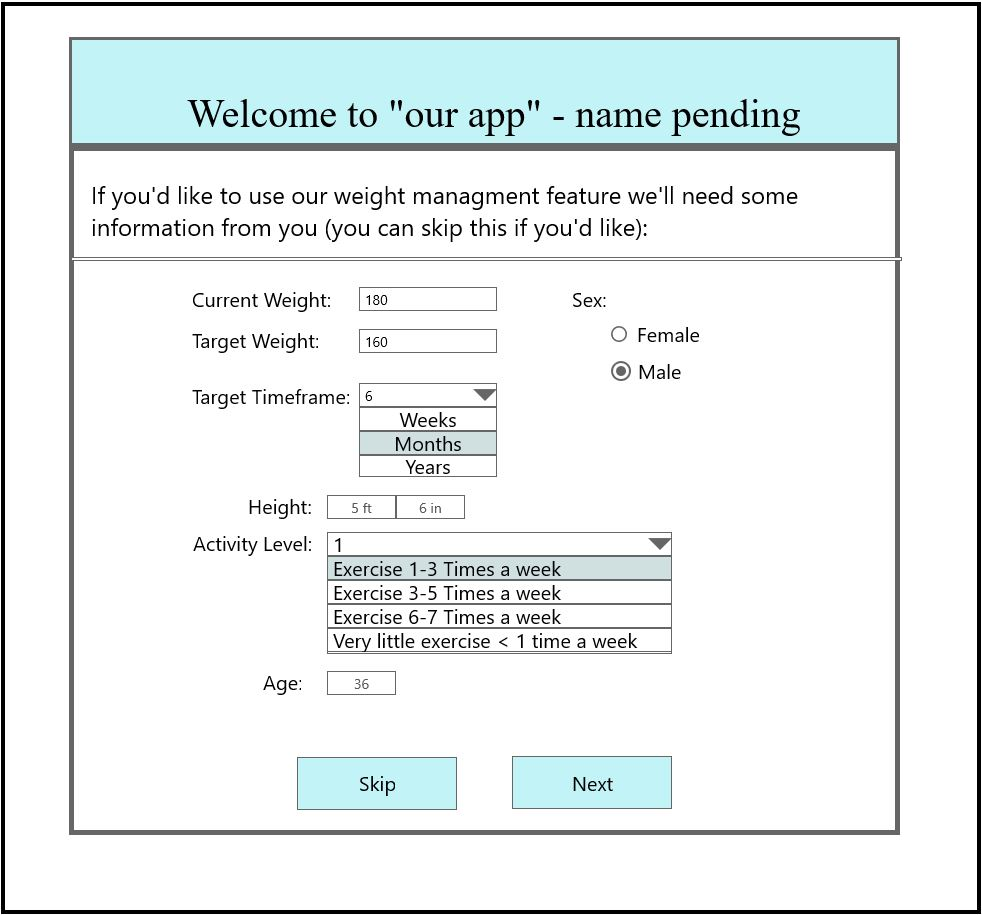
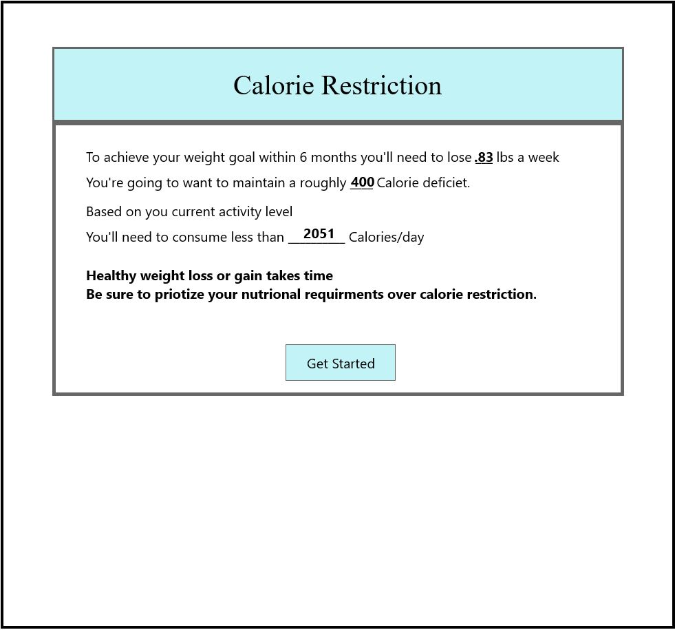
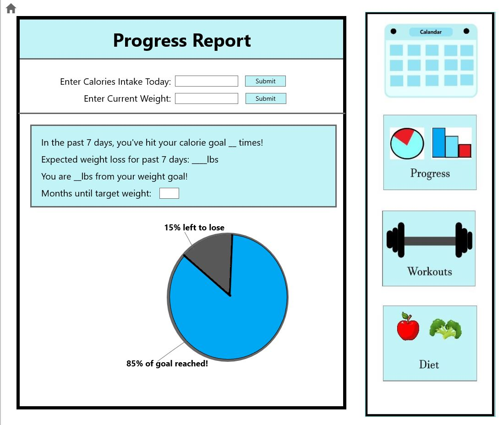
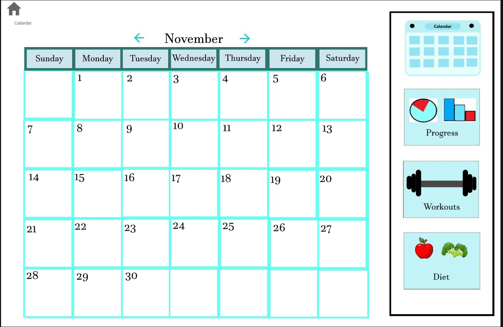
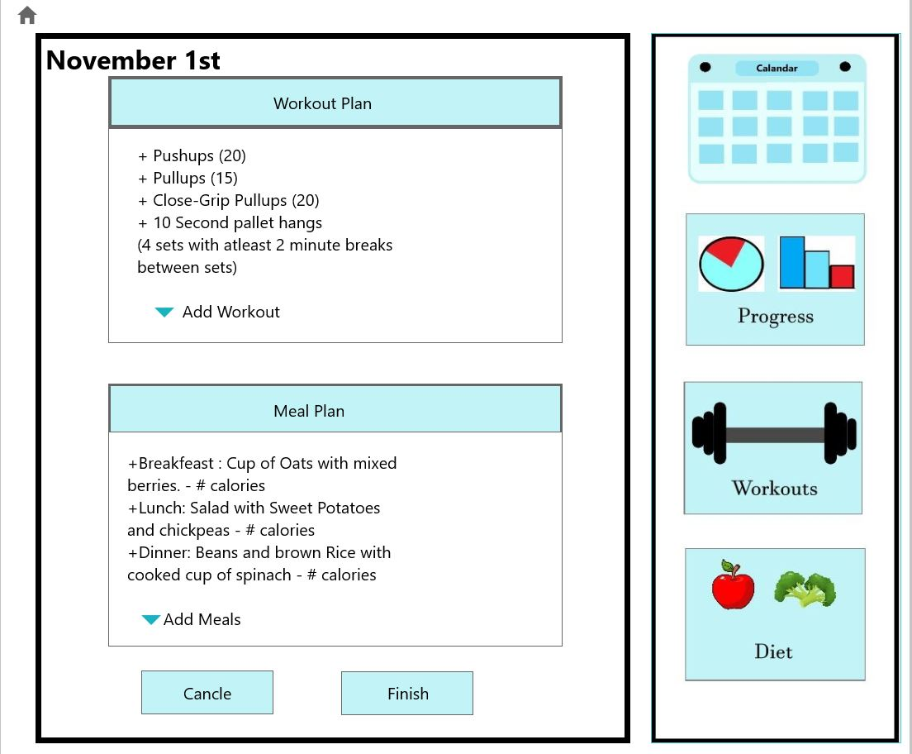

CSC-492-Project
Problem: It can be difficult to plan and accurately track your fitness goals
Prototyping Tools Used: Paint 3D, MockPlus, Invision
- Paint 3D - Used so I could create icons for the sidebar and a few other assets. Used this because it is familiar with it and
there is no annoying auto-correction (for lining up shapes and such) all in all Paint 3D is pretty free form
so terrible for lining things up but great for creating more “artistic” elements. - MockPlus - I used this because I was familiar with it from creating mock up game screens.
This has some helpful features that Invision studio seemed to lack such as
a right-click duplicate option, lining up guidance (not forced or *snapped in*), pre-made
icons (Dropdown, scrollbar, home) and much more. - Invision - Invision studio in my opinion was pretty limited when it came
to creating mockup screens but was were it shined over mockplus was it’s actual previewing
project feature. This is a paid for feature in MockPlus so its very cool that Invision
provides it for free, this worked well.
Prototype Link
Intentionally Absent features
-
Actual Calorie calculations as this would require some back end functionality that's not available.
in any of the prototyping tools. (calculations given in prototype are accurate though for hard-coded data)
-
Related to calorie calculations, no actual data entry was possible so all biometric information is
either hard coded or absent.
-
Nutrition information lookup is not actually functional this will require a substantial database
-
Today’s” Workout and Plan is omitted because it should look pretty similar to the “day selected”
information (see later in presentation)
-
The user can only select November 1st to plan, multiple days would not present or test any new functionality
- Not a super thought out choice but I did not add the actual user list of pre-selected workouts as I initially thought it would be clear in the back-end (this was not the case at all, see later in presentation)
Tasks
- Task 1:The user should be able to enter necessary biometric information and weight
loss/gain goals. The web app should produce a plan with caloric restrictions stated and projected weight
loss/gain if the caloric restriction/goal is met.
Progress on this should be measured accessible to user by using user input (later weight and calories)- - The user should be able to look up calories of their meals so they can track their intake.
- Task 2: The System should allow the user to lookup workouts and add them to their own list of workouts
-
Task 3: The User should be able to look up a given day and customize a workout
routine (using workouts from Task 2) and meal plan for that day. The user should have access to the current day at all time on the main page.
Key Screenshots
Welcome Page

Caloric Restrictions - (using information from Welcome page)

Progress Report

Calandar page

Day Selected - (from calandar)

Welcome Page
Reviewers: Sabah, Ben and Jackie
All Three reviewers were insightful and pleasantly critical of the prototype presented
Usability Problems: - Ordered most critical to least
-
P1, P2 and P3 all ran into this particular problem. The Workout Selector interface is
ambiguous. It is not clear by information present on the UI that workouts are user specific
and these workouts are added only through the *day selected* UI. (High)
- Solution: We will need to create a workouts list sub-page and a clear User
profile screen. I have no idea why I thought this could be all back-end stuff. This list should be acessible from
both the workout selector screen and the day planner screen
-
On the welcome page units of measurement are either not present at all or unclear.
180 stones = 2520 pounds. P2 caught this and a few typos (cancle -> cancel). (High)
- Solution: We should make sure to make the units of measurment clear on the side of
the textarea entry. It also may be to our favor to make the units selectable with a dropdown menu (kg, pounds)
-
Not explicitly stated problem but all 3 reviewers needed to clarify as that the “diet”
button leads to nutritional information lookup (given task of checking nutrition
information of Oatmeal). This tells me it is clearly ambiguous. (High)
- Solution: This seems to a be a probablem over all with the UI. Things are not clearly labeled.
This one case is an easy fix of changing the button from "diet" to "Nutrition Lookup"
-
P3 noticed that the calendar button is not clear as to where the user should click.
At first interaction they expected the icon to be a calendar with clickable *day blocks*. (High)
- Solution: Another easy enough fix, the 2d buttons on the sidebar should look more like buttons rather
than 2d pictures.
-
The core functionality of creating a workout and meal plan for an upcoming needs to be
directly accessible from the main page. P3 noticed this. (High)
- Solution: Placing a small interface to the right of "today's" plan window that would allow
the user to jump to a upcoming date's plan (perhaps tomorrow?)
-
The progress report submit buttons should be compiled into 1 button. P1 and P2 ran into this issue (medium).
- Solution: The problem stated is kind of the solution in this case. Just need to make the 2 buttons 1.
-
P3 noticed the *calorie restriction* page was kind of bloated. Important text did not stand out. I believe
by P1’s body language and time spent on this page initially they felt similarly. (medium)
- Solution: We will better highlight the most important information on this page such as the user's
specific caloric recommendations.
-
Nutrition information lookup needs an autofill and submit button. P1 and P3 caught this problem. (medium).
- Solution: This again is a clear problem with a clear solutions. We will add a submit arrow to
the right of the textbox and be sure to add autofill functionality like our capital game.
-
Welcome page “activity level” label for entry is unclear. P2 noticed this. (medium)
- Solution: We will change "activity level" to "level of activity" to make what we are
asking for more clear.
-
P1 noticed Pie chart in Progress Report is weirdly off center. (Low)
- Solution:
We will simply center the Pie chart.
-
I missed who and couldn’t find in recording but I’m pretty sure one reviewer felt it’s not obvious that you
should click a day on the calendar page to edit a plan for. (Low)
- Solution: We will add a message to the user on the top left of the page writing "select a day"